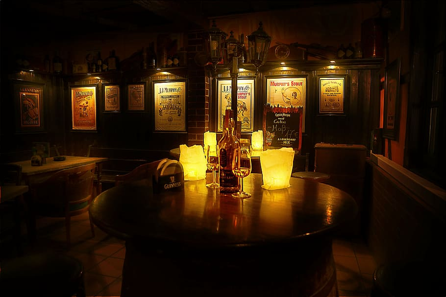

Where Fantasy Meets Flavor
Our master brewers have sourced the finest ingredients to create unique and flavorful beers that will transport you to another world. Each brew is made with care and precision, ensuring the perfect balance of flavors and aromas. Come and explore our world of Beedle Brews, where adventure and flavor are waiting to be discovered
